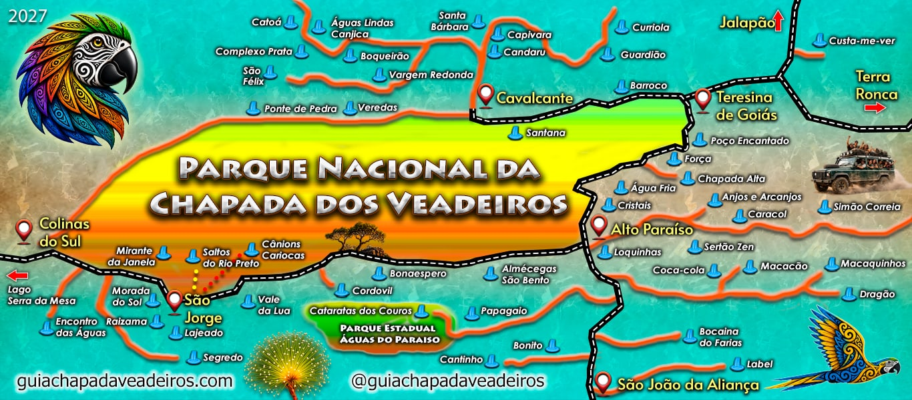

Part of the guide: Waterfalls of Chapada dos Veadeiros
Sertão Zen
Sertão Zen is a trek east of Alto Paraíso, outside the National Park fence, in Chapada dos Veadeiros. The trail climbs Serra da Baliza, crosses rocky grassland and reaches a lookout over a fall of about 150 meters, dropping into the Macaco River valley.
The path
It is about 9 km to the lookout, 18 km round trip, in six to nine hours. The first kilometer climbs hard. After that the trail fades on the rock. Midway there is Banho Inca, a small fall with a dark pool. There is no phone signal.
How to get there
The parking area is about 10 km from Alto Paraíso, on reasonable dirt. Entry is free. Even so the tour goes with a guide: the marks disappear and the sun is open.
Preparation
Carry at least a liter and a half of water per person, food, a hat and boots. In the rain the slab is slippery. The best window is the dry season, May to September. The main photo is a rock pool on the route; the second shows the escarpment of the area.
Photos: Guilherme Pitaluga and Bruno Posnik Roloff, CC BY-SA 4.0, Wikimedia Commons.
Photo gallery
Interactive map
Tap or click areas on the map over the catalogued attractions for more information.
